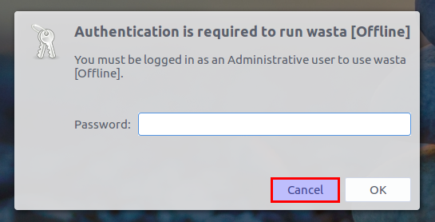
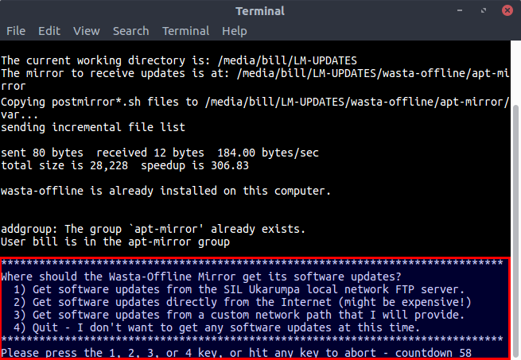
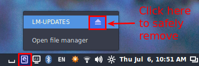

This
document is an illustrated guide that shows how to retrieve the
latest Linux software and updates for use by the Wasta-Offline
program from the Internet repositories (or software mirrors) saving
those updates on an external 1TB USB drive (known as a “full
software mirror”). Wasta Linux users can then use the external 1TB
USB drive to update the software on one or more Wasta Linux computers
using the Wasta-Offline program which is pre-installed on all Wasta
Linux systems.
This
document is an illustrated guide that shows how to retrieve the
latest Linux software and updates for use by the Wasta-Offline
program from the Internet repositories (or software mirrors) saving
those updates on an external 1TB USB drive (known as a “full
software mirror”). Wasta Linux users can then use the external 1TB
USB drive to update the software on one or more Wasta Linux computers
using the Wasta-Offline program which is pre-installed on all Wasta
Linux systems.
This document is designed to be a guide for an Advisor, Consultant, or Technician, as it involves the running of a script and interacting with prompts in a terminal window. But, don’t worry. The steps are well illustrated with screen shots and should be relatively easy for most users of Wasta Linux to follow.
It makes sense:
When the 1TB drive containing the Fulll Wasta-Offline Mirror can be periodically updated using a reasonably fast, reliable, and inexpensive local Internet connection, or
When the 1TB drive can be periodically taken to a location where Internet access is “free” or low cost, such as a regional center (like Ukarumpa) where the center keeps its own Linux software mirrors that you can access, to obtain the latest software updates for the Full Wasta-Offline Mirror
Where you need to Install Wasta Linux on potentially many computers and bring those computers up to date in the most efficient way possible
Where new software needs to be installed and that software doesn’t exist yet on any available Wasta computer
“How to obtain a Full Wasta-Offline Mirror residing on a 1TB USB hard drive”
“How to update your Wasta-Linux software offline by memory stick or external hard drive”
Most Linux software is stored and maintained on public servers known as software repositories or mirrors. Those repositories and mirrors are highly secure and designed so that only trusted software developers are allowed to contribute and upload software to them. Anyone can “read” or “copy” software packages from them, but only software that has been “signed” by the use of encrypted “keys” is allowed into them.
Linux software is open source and the software used in Wasta Linux is being regularly updated by its developers who may enhance the software with new features, fix bugs, and issue security updates. Those developers securely post updates to the appropriate software repositories.
The software on your Wasta Linux computer can be kept up to date directly from the Internet, or indirectly - by accessing a “mirror” of the Internet repositories that have been previously downloaded onto an external USB hard drive – without needing to access the Internet.
This guide tells how to get the latest updates from the Internet (or other already updated mirror) and ensure that those updates are stored on an external USB hard drive that is dedicated for that purpose. The program we use to retrieve Linux software and updates from the repositories and mirrors is called apt-mirror. It is a command-line only program so it does not have a nice graphical interface, so I’ve created a script that makes it relatively easy to use apt-mirror. The script file is named update-mirror.sh and is located in the root directory of the 1 TB Full Wasta-Offline Mirror external USB drives that I distribute.
With Wasta Linux booted up and running, insert the latest wasta-offline external drive you received from Bill Martin that contains the Full Wasta Offline Mirror already installed on it.

The wasta-offline program should start automatically within a few seconds after a the wasta-offline external hard drive is plugged in.
You will be updating the wasta-offline software on this external drive so you will not be running wasta-offline in this case. So click the Cancel button on the “Authentication is required to run wasta [Offline}” dialog:

Clicking Cancel will quit the wasta-offline program.
Keep the external 1TB drive plugged into the computer for the following steps.
Hover your mouse over the icons in the panel of programs near the lower left corner of your screen until you see the Files program. Run the File Manager program by clicking once on the Files tray icon:

We usually refer to the Files program as the File Manager (or by its real Linux name, which is Nemo). Here is a view of what you should see when the File Manager program is running - with the 1TB external Full Wasta-Offline Mirror plugged into the computer:
Under Devices in the left panel you should see the LM-UPDATES device, which is the label Bill has given to the external drive containing the full wasta-offline mirror. The presence of the little round icon to its right indicates that the LM-UPDATES device is “mounted” in the computer’s file system.
Now select the LM-UPDATES device by clicking on it with your mouse pointer. The Files program should now display the contents of the LM-UPDATES device in the right hand pane of the Files’ window as shown below:
The update-mirror.sh file is a script file that we will run to update the software package data on the external hard drive. It is shown highlighted in the illustration above.
The update-mirror.sh script is one of a collection of wasta-scripts created by Bill Martin to manage the creation and maintenance of Full Wasta-Offline Mirrors on multiple 1TB USB hard drives. The scripts are maintained in a GitHub repository located at: https://github.com/pngbill-scripts/wasta-scripts. A copy of this repository that includes all of the wasta-scripts is provided on the USB external drive provided by Bill Martin.
To run the update-mirror.sh script you will need to access the Internet, so make sure that your computer has access to the Internet.
WARNING: You should continue this procedure only if your Internet data plan is capable of downloading gigabytes of data at no extra cost or at reasonable cost. The update procedure that we are about to do may need to download anywhere from a few kilobytes up to a few gigabytes.
With your mouse double click on the update-mirror.sh file. You should see the following dialog:
Click on the Run in Terminal button. The computer will open a Terminal window and the update-mirror.sh script will start running inside that Terminal window:
The Terminal prompts the user (in this case the user is bill) for [sudo] password for bill: The password is the password that I enter when Wasta starts up at login. If the user is not an administrator, the password needs to be the password for the administrator. The prompt will have your user name instead of bill.
When typing your password you need to take care, because in a Terminal, Linux does not echo the keys you are typing for security reasons. Hence, you will need to type your password blindly with the screen giving no feedback to help you. Press the Enter key after typing your password. If you have typed your password correctly, the script will move on. If you make a mistake, the Terminal will say “Sorry, try again.” and continue to ask for your password until you type it correctly – or you can abort the running of the script by typing Ctrl + C (hold down the Ctrl key and press the C key, then release both) if you decide not to proceed.
Once you have successfully entered your password into the Terminal, the script continues to run and will output some information to the screen. In a short time, it will pause for 60 seconds and wait for your to respond to the prompt illustrated in the screen shot below:

This documentation assumes that you have good/affordable Internet access so you should type the number 2 to indicate to the script that you have selected the following option:
2) Get software updates directly from the Internet (might be expensive!)
If you do not respond within 60 seconds the 4) Quit option will automatically be selected and the script will abort without downloading any information (and show the following message in the Terminal):
and you can press the Enter key to close the terminal window. If the countdown gets to 1 before you can respond, you can simply run the update-mirror.sh script more than once if necessary to complete the operation of downloading software updates.
The number 1 option would be selected by users located at Ukarumpa who have access to the Linux mirrors that are kept up to date on the Ukarumpa PNG servers. The number 3 option would be selected by someone who has good access to a different server (in which case the script would ask you to type in a network path to that server). The number 4 option will just quit running the update-mirror script before downloading any data.
Assuming that you select option 2 the script continues. The script makes some checks and installs and configures the apt-mirror program if necessary. It then begins the download of some index files that it uses to determine what software packages need to be updated in the existing mirror:

The above processing will take a few minutes. Once the “Processing indexes...” step has finished, the script will automatically start the actual download of the software updates:
Note the amount of data that “will be downloaded into archive.” Depending on how long since you last updated the mirror, this amount can range from 0 bytes to a number of Gigabytes of data. The time needed will depend on the speed of your Internet/network connection and amount of data to download.
The process continues automatically until the download process has completed. Once the download has completed, the script does some house-cleaning:
and will present another (optional) timed prompt that looks like this:
If you are watching the script run when this prompt appears, you can safely type 1 or just allow the countdown to go down to 1, after which the script will finish normally:
At this point just press the Enter key to close the Terminal window.
You would only run the postmirror2.sh script if you saw a warning message in the script’s output that indicated that it encountered “Hash Sum mismatch errors”.
Once the script has finished and you have pressed Enter to close the Terminal window.
You can now "Safely Remove" the external USB hard drive mirror. Hover the mouse over the icons found on the lower right corner of the desktop as you look for the Removable drives icon:

Click on the Removable drives icon to display the pop up menu:

The external USB drive mirror we are demonstrating is named LM-UPDATES. In this case it is the only device listed in the removable drives menu list (there may be other drives listed for your computer). Click on the icon shown in the illustration above to safely remove the external drive containing the wasta-offline updates (mirror).
You may see a brief notification at the top of your screen that says:

Unplug the external USB drive.
If instead, you see a brief notification that says:
make sure that you have pressed the Enter key within the Terminal window and the Terminal window has closed:
If the “Failed to unmount...” notification persists even after you have closed the Terminal (and it is not minimized on the task bar), it is generally safe to go ahead and unplug the external USB hard drive
even if the “Failed to unmount...” notification persists when you try to “safely remove” the drive with the “Removable drives” pop up menu as shown farther above.
You may run the update-mirror.sh script periodically as described in this document. Update your mirror as often as you want to collect any software updates to bring the external 1TB mirror up to date.
Next logical step – use the updated 1TB Full Wasta-Offline Mirror to update the Wasta Linux system and install Linux software on your computers! That process is described and illustrated in the document named: “How to update your Wasta-Linux software offline by memory stick or external hard drive”.
How
to Get the Latest Wasta-Offline Mirror Updates